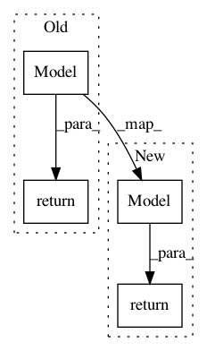

641a28fbf0daff0ad1ad0f43d2c4b545cb6f9656,examples/basic_tutorials/1_mnist_mlp_eager_mode_model2layer.py,,get_model,#Any#,26
Before Change
nn = Dropout(keep=0.8)(M_hidden.as_layer())
nn = Dense(n_units=10, act=tf.nn.relu)(nn)
M = Model(inputs=ni, outputs=nn, name="mlp")
return M
MLP = get_model([None, 784])
// MLP.print_layers()
After Change
nn = Dropout(keep=0.8)(M_hidden.as_layer())
nn = Dense(n_units=10, act=tf.nn.relu)(nn)
return Model(inputs=ni, outputs=nn, name="mlp")
MLP = get_model([None, 784])
// MLP.print_layers()
In pattern: SUPERPATTERN
Frequency: 3
Non-data size: 4
Instances
Project Name: tensorlayer/tensorlayer
Commit Name: 641a28fbf0daff0ad1ad0f43d2c4b545cb6f9656
Time: 2019-02-16
Author: dhsig552@163.com
File Name: examples/basic_tutorials/1_mnist_mlp_eager_mode_model2layer.py
Class Name:
Method Name: get_model
Project Name: keras-team/autokeras
Commit Name: 9a387157f03916b2f4f9f63647792dca39942471
Time: 2018-03-29
Author: jin@tamu.edu
File Name: autokeras/generator.py
Class Name: DefaultClassifierGenerator
Method Name: generate
Project Name: tensorlayer/tensorlayer
Commit Name: 641a28fbf0daff0ad1ad0f43d2c4b545cb6f9656
Time: 2019-02-16
Author: dhsig552@163.com
File Name: examples/reinforcement_learning/tutorial_frozenlake_dqn.py
Class Name:
Method Name: get_model